A while ago I got a huge amount of old Chips, including a ceramic MC6800L CPU. I wanted to build a Computer around this nice looking Chip and decided to recreate the Australian DREAM 6800(sometimes also called D.R.E.A.M. 6800), published in the magazine "Electronics Australia" in 1979 and designed by Michael Bauer. It is a early single-board-computer with a whopping 1KiB(1024 Bytes!) RAM and 1KiB ROM programed with CHIP-8. It has a composite video output with a resolution of 64x32 pixels. It uses a hexadecimal keyboard and uses a tape interface to load and store data.
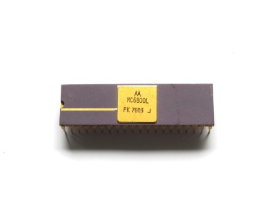 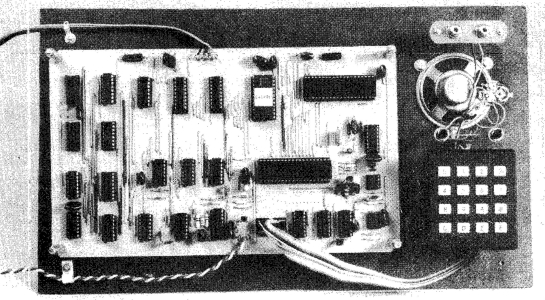The first thing I had to start with was the Circuit Board. After I looked around a bit, I found two Versions:
The first one was the original layout shown in the EA Article:
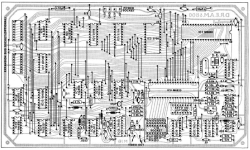 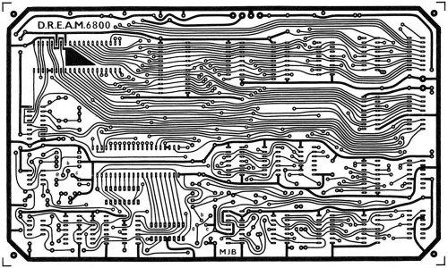The second one was made by David Fry which is a 40th Anniversary Edition of the DREAM 6800 thats mostly identical, only the two 2114 RAM chips were changed to 6116 RAM Chips and the 2708 EPROM was changed to a 2716/2732 EPROM. In order to reduce high production costs of the pcb the whole circuit had been highly compressed onto a double-sided PCB:
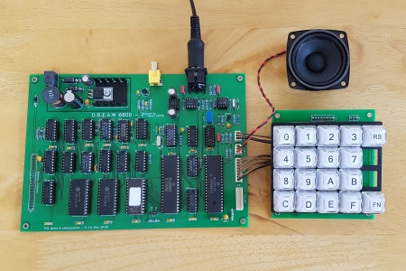 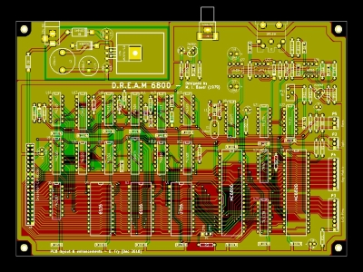I decided that I definitely wanted to keep the look of the original circuit board, but because the original pcb had such a bad resolution I first decided to remake the whole board in Kicad. I wanted to keep the original look of the Computer, first because it looks really unique and second because it is only single-sided and therefore "easy" to etch myself. I simply used the schematics of the 40th Anniversary version and simply remade the whole circuit board. Here is the Result of that:
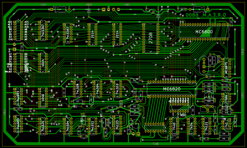 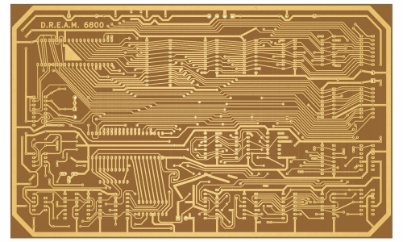 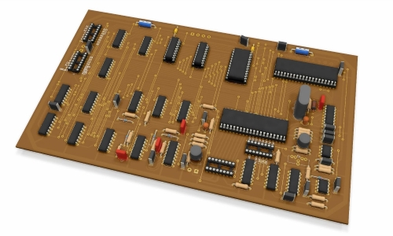You can download the Kicad files here: DREAM6800.rar
I wasn't pleased with the outcome at all, first because it looked a bit ugly, but also because the clearances were a bit tight, and I felt that it lost its original charme. That's why I decided to use the original board design. The quality wasn't very good, but after hours of fiddeling around with image editing software I managed to get a good output. With the help of the Kicad bitmap2component tool I adjusted the size and printed it on transparent paper to etch the circuit board. If you want to use this design you can find it in the Eco1.User Layer of the DREAM6800.rar project or this pdf file. I printed the layout on transparent paper and with a little help from my dad now started etching the board, which was quite complicated. After two failed attempts I finally got a well etched board. Drilling all the holes took some time, but I managed to do that without breaking a single drill! Next step was to mount all the Components. I started with cutting and soldering all the wires to the Board, followed by flat components like resistors and capacitors. IC-sockets and connectors followed.
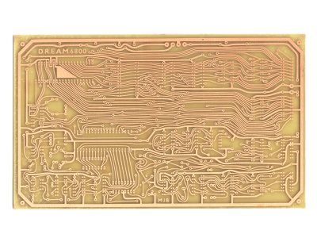 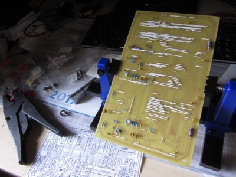 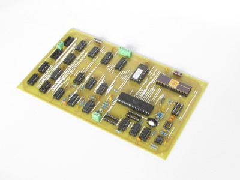Now I only had to grab all the Chips and slam them into their sockets and the computer was ready to go. Here is what the finished DREAM 6800 looks like (still missing the NE566 and MC6875):
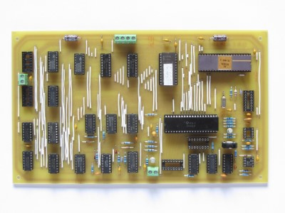Thanks to a very kind donation of Michael Bauer I was able to install the missing NE566 and also replace the Intel 2708 with a Electronic Arrays 2708 in Ceramic Package, so it fits perfectly to the CPU. Because the EPROM-Programmer I normally use does not support 2708's, I used my Mostek Computer which features a 2708/2716 EPROM-Programmer for it. I also made the MC6875 substitute circuit to temporarily replace the missing MC6875 clock signal generator chip.
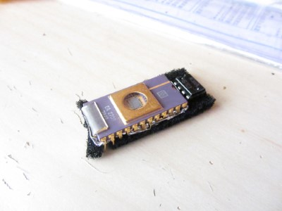 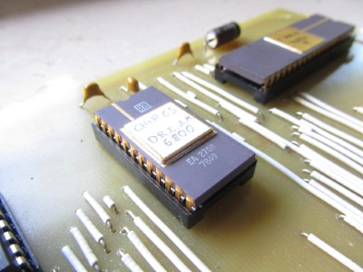 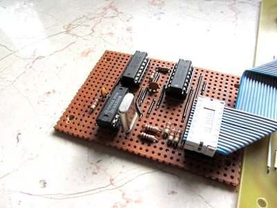First I planned to use a black keypad which did not had a hexadecimal labeling. Not long ago I was contacted by David, who sells little CHIP-8 Computers on his Website, and also makes matching Keypads. The Connector is the same as the one that is used on the DREAM 6800 Computer, and he kindly offered me one. The keys are definitely better as the ones used by the black keypad, and it also features a Reset and Function Key.
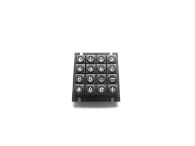 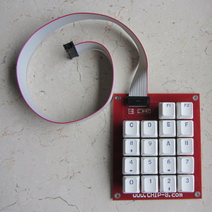 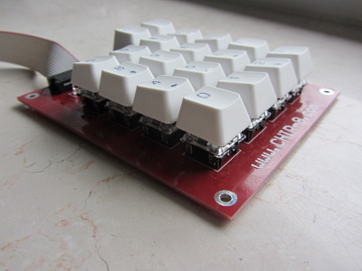Now the only thing that needed to be done in order to power up my DREAM 6800, is to build a powersupply that offers +12V, +5V and -5V. In the end I decided to just buy a small switched power supply, and wired it all up. Beeing fairly sure that I checked everything I finally powered it up. And... it produced a picture!
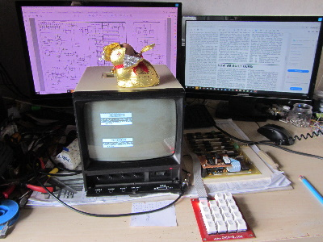 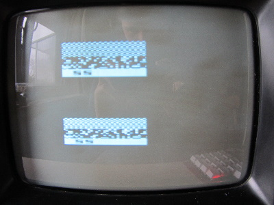As you can see, the picture doesn't look very well. It is missing the complete left side and also appears twice on screen. After doing some troubleshooting using the picture timing diagram, I figured out that I accidentally shorted H64 and H32. Undoing that mistake solved all the problems, I finally have a working DREAM 6800! I also changed out the plastic 6821 with a ceramic MC6820L.
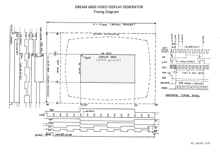 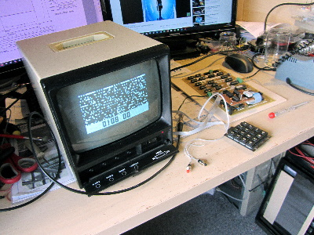 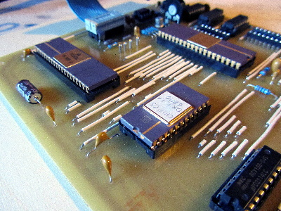Last but not least, I seated the MC6800 Computer in a homebuild case. I simply used wooden panels for the bottom and sides, and attached thin plywood between both side panels. This way I could easily drill holes for all necessary buttons, switches and connectors and yet have a very durable case. The DREAM 6800 is mounted on long screws, so it is elevated and can easily be seen through the Plexiglass plate on top. I have also made labels from A to F for the keypad, which originally only had symbols instead of letters. Additionally, I replaced the two memory chips with ceramic MCM2114L chips as well, just because I think they fit very well with the rest of the computer.
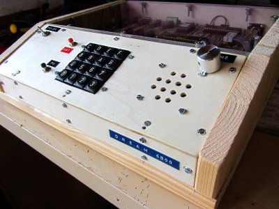 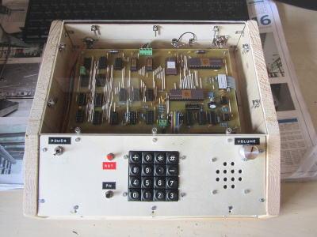
I also want to build some expansion boards for it, definitely a RAM expansion, maybe even add an ASCII keyboard. I'll update this page as soon as I upgraded my DREAM 6800!
This page was last modified .